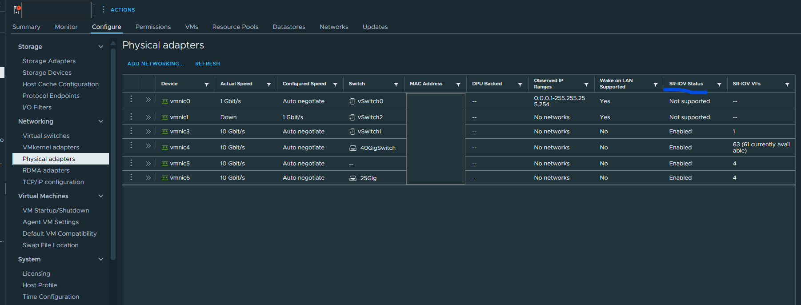
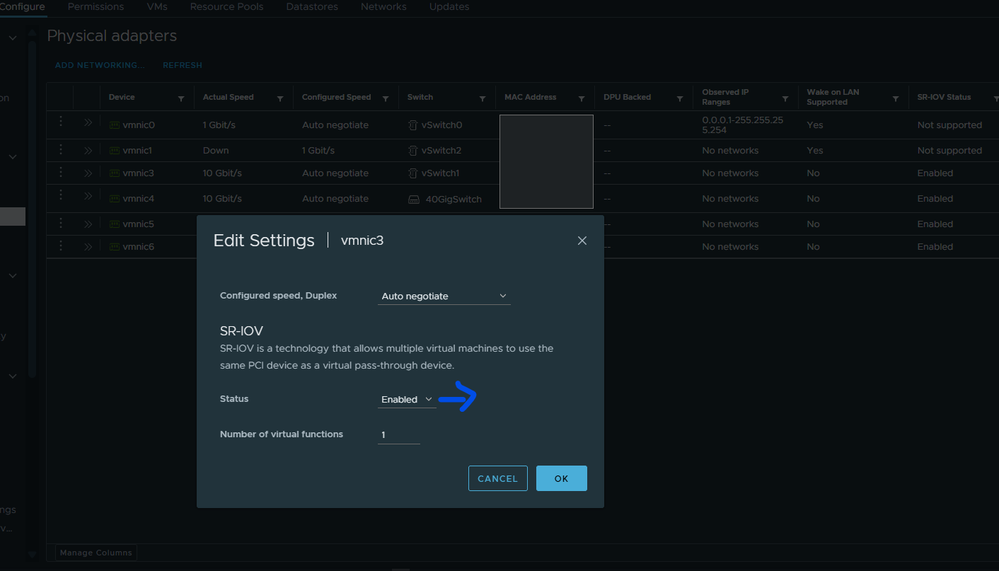
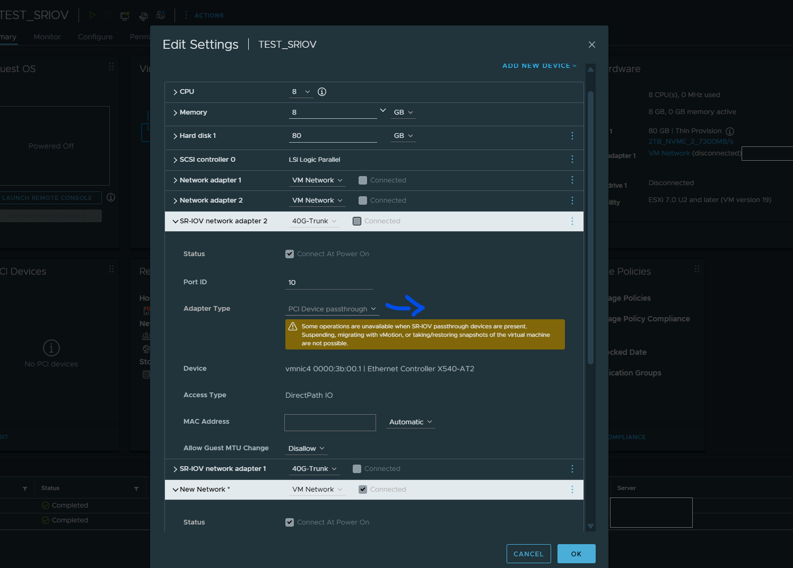
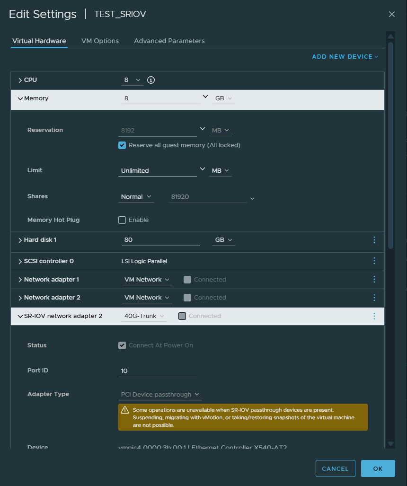
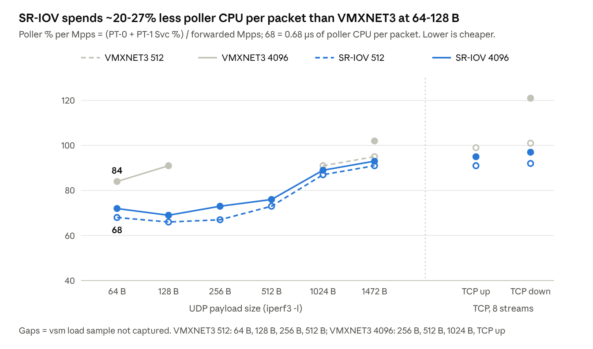
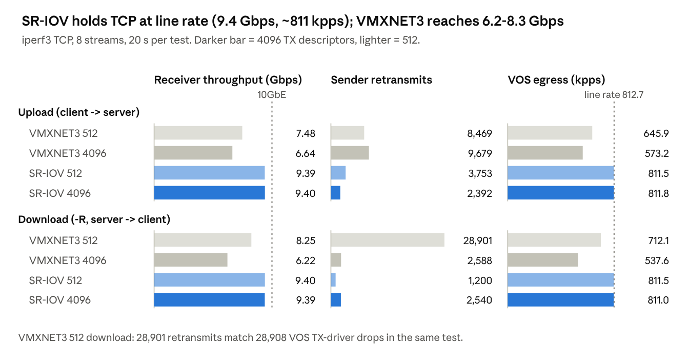

Method: written with AI assistance; all commands and outputs are from the author's lab (9 Nov 2026).
Applies to: VOS 22.1.4 and later · ESXi 7.0 U3 and later.
Tested on: VOS 22.1.4-GA · ESXi 7.0 U3 (build 21424296) · vCenter 8.0.3 (build 24022515) · Intel X540-AT2 (ixgben) · 2× Intel Xeon Platinum 8160 (2.1 GHz).
What SR-IOV is Why and when Prerequisites How many VFs Step 1: host NIC Step 2: VM adapter Step 3: verify in VOS Gotchas Test bed Results Useful CLI Caveats Summary References
What SR-IOV is
SR-IOV (Single Root I/O Virtualization) is a PCIe standard that lets one physical NIC present itself as many lightweight virtual NICs, called virtual functions (VFs). ESXi hands a VF directly to a VM, so the guest driver reads and writes the NIC's hardware queues itself and the ESXi virtual switch is not in the data path. The result is close to bare-metal throughput and latency, at the cost of tying the VM to that host and NIC.
The NIC port itself is the physical function (PF); ESXi owns it and manages the VFs through it. Each VF is a lightweight copy that one VM uses directly. In this lab the PF is vmnic4 (Intel X540, port 2), and VOS vni-0/0 and vni-0/2 each use one of its VFs.
Why and when
All steps use the vSphere Client in vCenter 8.0.3 managing an ESXi 7.0 U3 host. The standalone ESXi Host Client has similar settings under different menus; it is not covered here.
Use SR-IOV for a VOS on ESXi that has to forward more than about 700 kpps or 7 Gbps per port pair. Below that, VMXNET3 is simpler and keeps vMotion and snapshots.
In this lab (VOS 22.1.4, 8 vCPU, one LAN/WAN pair, Intel X540 10GbE), SR-IOV reached 10GbE line rate: 9.4 Gbps TCP and 1.2 Mpps at 64 B, with zero drops. On the same host, VMXNET3 reached 7.5 to 8.3 Gbps and 1.02 Mpps, dropped packets on TX, and caused SSH timeouts on other VMs. SR-IOV gives the VF to the VM, so the VOS DPDK poller talks to the NIC directly and the vSwitch is bypassed.
Prerequisites
Check these before touching the host. The NIC must pass on both sides: ESXi must support SR-IOV on it, and VOS must have a DPDK driver for its VF.
| Item | Requirement | How to check |
|---|---|---|
| Server BIOS | IOMMU (Intel VT-d / AMD-Vi) and SR-IOV enabled | Server vendor BIOS setup |
| NIC firmware | SR-IOV enabled in firmware (some vendors need a separate firmware tool) | NIC vendor docs |
| ESXi PF driver | VMware-certified driver that supports SR-IOV | VMware Compatibility Guide; Configure > Physical adapters shows an SR-IOV column |
| VOS VF driver | VF PMD supported by VOS. 22.1.4: Intel ixgbe VF (82599/X520/X540/X550), iavf (X710/E810), igb VF (I350). Not supported: Mellanox/NVIDIA ConnectX (mlx4/mlx5) and Broadcom (bnxt) | /var/log/versa/versa-service.log shows Unsupported device type for a rejected PMD |
| VM hardware | Compatibility ESXi 5.5 or later; all guest memory reserved | VM Edit Settings |
| VOS sizing | 1:1 CPU and memory, no overcommit; Versa recommends High latency sensitivity | Versa branch hardware requirements |
Unsupported device type.How many VFs you need
Count SR-IOV adapters, not VMs. Each SR-IOV network adapter in a powered-on VM uses one VF on the PF it is mapped to, so size each PF separately.
| Scenario | VFs used on that PF |
|---|---|
| 1 VOS, WAN and LAN on the same port | 2 |
| 1 VOS, WAN on port 1 and LAN on port 2 | 1 on each port |
| VOS HA pair, each with WAN and LAN on the same port | 4 |
| 10 VOS, 3 SR-IOV ports each, all on one port | 30 |
- VFs are assigned at power-on and released at power-off. The limit is the sum over VMs running at the same time on that PF. A VM that finds no free VF is expected to fail to power on (not tested in this lab).
- Size with headroom. Changing the VF count needs a host reboot. On ixgben, enabling SR-IOV on a port cuts that port's vSwitch queues (VMDq 8 to 2) whether you create 1 VF or 61, so extra VFs cost little.
- The NIC sets the ceiling. Intel X540 supports 63 VFs per port, and 61 when the port also uplinks a vSwitch (see Gotchas).
- Management uses no VF. Keep VOS
eth0on VMXNET3; only the data ports need VFs.
Step 1: Enable virtual functions on the host NIC
SR-IOV is enabled per physical port (PF), and the host must reboot. Plan a maintenance window: every VM on the host goes down, including vCenter if it runs there.
- In the vSphere Client, select the host and open Configure > Networking > Physical adapters. The SR-IOV column shows whether each port supports it.
- Select the port that will carry VOS traffic and click Edit adapter settings.
- Under SR-IOV, set Status = Enabled and type the Number of virtual functions. One VF is used per VOS vNIC on that port, so size it for the VOS interfaces you plan plus spares. 0 disables SR-IOV.
- Click OK and reboot the host.
- After the reboot, the VFs appear under Configure > Hardware > PCI Devices, and the adapter shows SR-IOV Enabled with the VF count.


The same information from the ESXi shell (enable SSH first under Host > Services). Output from the lab host, 9 Nov 2026.
SR-IOV capable ports
Lists every port whose ESXi driver supports SR-IOV. It does not say whether VOS can use the VFs: vmnic5 and vmnic6 (ConnectX-4 Lx) appear here, but VOS 22.1.4 has no driver for them. MAC and Duplex columns removed for width.
# esxcli network sriovnic list
Name PCI Device Driver Link Speed MTU Description
------ ------------ ---------- ---- ----- ---- -----------------------------------------------------
vmnic3 0000:3b:00.0 ixgben Up 10000 1500 Intel(R) Ethernet Controller X540-AT2
vmnic4 0000:3b:00.1 ixgben Up 10000 9000 Intel(R) Ethernet Controller X540-AT2
vmnic5 0000:86:00.0 nmlx5_core Up 10000 1500 Mellanox Technologies MT27710 Family [ConnectX-4 Lx]
vmnic6 0000:86:00.1 nmlx5_core Up 10000 9000 Mellanox Technologies MT27710 Family [ConnectX-4 Lx]Driver parameters
On this host max_vfs reads 64, yet the ports run 1 and 61 VFs. The driver applied the per-port values set in the vSphere Client: vmkernel.log at boot shows "SR-IOV set to 1" for vmnic3 and "set to 63" for vmnic4, then the reduction to 61. Do not read the VF count from max_vfs; prefer the vSphere Client for setting it too. VMDQ is the vSwitch queue setting that drops from 8 to 2 when SR-IOV is on. Other parameters removed.
# esxcli system module parameters list -m ixgben
Name Type Value Description
------- ------------ ----- -----------
VMDQ array of int Number of Virtual Machine Device Queues: 0/1 = disable, 2-16 enable (default = 8)
max_vfs array of int 64 Maximum number of VFs to be enabled (0..63)VFs on one port
One row per VF, 61 on vmnic4 (VF ID 0 to 60). All show Active false here because the VOS VM was powered off. When it runs, each of its SR-IOV adapters holds one VF, shown as Active true with the VM's Owner World ID. Rows 3 to 59 removed.
# esxcli network sriovnic vf list -n vmnic4
VF ID Active PCI Address Owner World ID
----- ------ -------------- --------------
0 false 00000:059:16.1 -
1 false 00000:059:16.3 -
2 false 00000:059:16.5 -
...
60 false 00000:059:31.1 -Step 2: Add an SR-IOV adapter to the VOS VM
The VM must be powered off: SR-IOV adapters cannot be hot-added. Keep management (eth0) on VMXNET3, and use SR-IOV only for the WAN and LAN data ports.
- Power off the VOS VM and open Actions > Edit Settings > Virtual Hardware.
- Click Add new device > Network Adapter.
- Under New Network, pick the port group. The VF does not send data through this port group: ESXi only reads its settings, for example the VLAN tag, and applies them to the VF.
- Set Adapter Type = PCI Device passthrough (shown as SR-IOV passthrough).
- Set Physical function to the port you enabled in Step 1.
- Leave Guest OS MTU Change at Disallow unless VOS needs jumbo frames on that port.
- Expand Memory, tick Reserve all guest memory (All locked), and click OK. Without it, the VM does not power on: the passthrough device needs all VM memory locked for DMA.
- Repeat steps 2 to 7 for each data port, then power on. ESXi picks a free VF on that PF at power-on.


vni-0/0, vni-0/1, and so on, in the order the guest finds the NICs. With mixed VMXNET3 and SR-IOV adapters, that order can differ from the Edit Settings list. Match by MAC address before you configure anything (Step 3).Step 3: Verify inside VOS
Four checks: the VF is visible, DPDK claimed it, the vni has the right MAC, and traffic counts match ESXi. Output from the lab VOS (22.1.4) and host, 9 Nov 2026.
1. The VF is visible and DPDK claimed it (VOS shell)
$ lspci | grep -i 'virtual function'
03:00.0 Ethernet controller: Intel Corporation X540 Ethernet Controller Virtual Function (rev 01)
0b:00.0 Ethernet controller: Intel Corporation X540 Ethernet Controller Virtual Function (rev 01)
$ sudo /opt/versa/scripts/versa_pci_unbind.py --status
network devices using DPDK-compatible driver
============================================
0000:03:00.0 'X540 Ethernet Controller Virtual Function 1515' drv=igb_uio unused=ixgbevf,vfio-pci
0000:0b:00.0 'X540 Ethernet Controller Virtual Function 1515' drv=igb_uio unused=ixgbevf,vfio-pci
0000:1b:00.0 'VMXNET3 Ethernet Controller 07b0' drv=igb_uio unused=vmxnet3,vfio-pci
network devices using kernel driver
===================================
0000:13:00.0 'VMXNET3 Ethernet Controller 07b0' if=eth0 drv=vmxnet3 unused=igb_uio,vfio-pci *Active*
$ sudo grep -hE 'Probe PCI|Unsupported device' /var/log/versa/versa-service.log | tail -12
... # last 3 of 12 lines; the same 3 probes repeat per restart
EAL: Probe PCI driver: net_ixgbe_vf (8086:1515) device: 0000:03:00.0 (socket 0)
EAL: Probe PCI driver: net_ixgbe_vf (8086:1515) device: 0000:0b:00.0 (socket 0)
EAL: Probe PCI driver: net_vmxnet3 (15ad:7b0) device: 0000:1b:00.0 (socket 0)Each SR-IOV adapter shows up as an X540 Virtual Function. Both VFs sit under the DPDK-compatible driver (igb_uio), and the log shows they were probed by net_ixgbe_vf. eth0 (management) stays on the kernel driver. Unsupported device type, dpdk pmd : [...] in this log means VOS has no driver for that NIC (see Prerequisites).
2. Map each vni to its MAC (VOS CLI)
Compare with the MAC addresses on the VM's Summary / Edit Settings page from Step 2.
admin@BRANCH-1-cli> show interfaces brief | tab
NAME MAC OPER ADMIN TENANT VRF IP
vni-0/0 00:50:56:aa:bb:01 up up - -
vni-0/0.0 00:50:56:aa:bb:01 up up 2 INET-1-Transport-VR 192.168.100.40/24
vni-0/1 00:50:56:aa:bb:02 up up - -
vni-0/1.0 00:50:56:aa:bb:02 up up 2 INET-2-Transport-VR 198.51.100.97/24
vni-0/2 00:50:56:aa:bb:03 up up - -
vni-0/2.0 00:50:56:aa:bb:03 up up 2 ACME-LAN-VR 10.40.40.40/24
admin@BRANCH-1-cli> show interfaces detail vni-0/0
MAC address : 00:50:56:aa:bb:01
Routing instance : INET-1-Transport-VR (12)
Host interface : eth1
Duplex / Speed : full-duplex / 10GbpsIn this lab vni-0/0 (WAN) and vni-0/2 (LAN) carry the MACs of the two SR-IOV adapters, and vni-0/1 is the VMXNET3 adapter. Rows for eth-0/0 and tunnel interfaces, and most detail lines, are removed.
3. Run traffic and check the counters
Outputs taken during two 8-stream iperf3 TCP runs through VOS: the port statistics in the first run (9.18 Gbps average), the vsmd outputs in the second (9.39 Gbps average).
admin@BRANCH-1-cli> show interfaces port statistics brief | tab
NAME HOST INF OPER RX PPS RX BPS TX PPS TX BPS RX USAGE TX USAGE
vni-0/0 eth1 up 22614 11940544 810842 9820922336 0.11 98.2
vni-0/1 eth3 up 1 640 0 0 0.0 0.0
vni-0/2 eth4 up 811251 9825872112 22615 11940720 98.25 0.11
$ vsh connect vsmd
vsm-vcsn0> show vsm load
Svc Svc CPU
Thread PID Load EWMA Load
WT-0 4093 20 16 100
WT-1 4094 8 8 98
WT-2 4095 16 16 100
WT-3 4096 20 18 100
WT-4 4097 22 20 100
PT-0 4098 30 --- 100
PT-1 4099 47 --- 100
vsm-vcsn0> show vsm statistics port mac dpdk-raw
DPDK Stats for port : 0 [vni-0/2] # SR-IOV VF
rx_good_packets : 28319517
tx_good_packets : 812937
rx_good_bytes : 42875433071
tx_good_bytes : 53673747
rx_multicast_packets : 132
DPDK Stats for port : 2 [vni-0/1] # VMXNET3, for comparison
rx_good_packets : 258
tx_good_packets : 20
rx_q0_packets : 258
tx_q0_packets : 20
vsm-vcsn0> show vsm statistics dropped all
THRM ERROR STATISTICS
~~~~~~~~~~~~~~~~~~~~~~
# empty in this run: no TX driver dropsAt line rate, vni-0/2 receives and vni-0/0 sends about 811 kpps (98% of 10G). The two poller threads (PT) are at 30% and 47% service load; CPU Load reads about 100 on every busy DPDK thread, so read the Svc Load column. A VF reports only good_* and multicast counters in dpdk-raw, with no per-queue or drop counters. Watch the THRM section of show vsm statistics dropped all for "Drop Packets TX - Driver". Columns, port blocks and other drop sections are removed for width.
4. Cross-check on the ESXi side
# esxcli network sriovnic vf list -n vmnic4
VF ID Active PCI Address Owner World ID
----- ------ -------------- --------------
0 true 00000:059:16.1 2104751
1 true 00000:059:16.3 2104915
2 true 00000:059:16.5 2104724
3 true 00000:059:16.7 2104724
4 false 00000:059:17.1 -
...
# esxcli network sriovnic vf stats -n vmnic4 -v 2
Rx Errordrops: 0
Rx Multicast Pkts: 165
Rx Outof Bufferdrops: 0
Rx Unicast Bytes: 48562888456
Rx Unicast Pkt: 32076132
Tx Discards: 0
Tx Unicast Bytes: 60726626
Tx Unicast Pkt: 919409| Idle, after the tests | Counter | VOS dpdk-raw | ESXi VF stats | Difference |
|---|---|---|---|---|
| vni-0/2 = VF2 | RX packets | 32,076,129 | 32,076,297 | 168 |
| vni-0/2 = VF2 | TX packets | 919,409 | 919,409 | 0 |
| vni-0/2 = VF2 | RX bytes | 48,562,888,216 | 48,562,888,456 | 240 |
| vni-0/0 = VF3 | RX packets | 919,576 | 919,745 | 169 |
| vni-0/0 = VF3 | TX packets | 32,075,977 | 32,075,977 | 0 |
VF2 and VF3 share Owner World ID 2104724: they are the VOS VM's two SR-IOV adapters. VF0 and VF1 belong to two other VMs on the same port. When the VM powers off, its VFs go back to Active false. TX counts match exactly; ESXi counts about 170 more received packets than VOS, close to the multicast count (cause not checked). ESXi RX here = unicast + multicast + broadcast packets. Other counter lines are removed.
Gotchas
The biggest trade-off is that an SR-IOV VM loses most vSphere mobility and protection features. The rest are traps hit in the lab.
Lab findings
- Check the VF count after the reboot. 63 VFs were set on an X540 port that also carries a vSwitch, and vSphere showed "63 (61 currently available)". The ixgben driver keeps queue pools for the port's own vSwitch traffic (VMDq), so at boot it logs "VMDq reduced to 2 when SR-IOV is enabled" and "Reducing the number of SR-IOV VFs to 61". The first number is what you asked for; the number in brackets is what the driver created. Size against the second one.
- Changing the VF count needs another host reboot. If vCenter runs on the same host, use the host client or esxcli for the change.
- ESXi SSH is off after a reboot unless its policy is "Start and stop with host". Enable it before you need esxcli.
- Cloned VOS VMs get new MACs, and the vni order can shift. VOS keeps the old MACs in its udev persistent-net rules, so the new NICs come up under other names. Follow the persistent-MAC section of Install on VMware ESXi, or re-check the vni-to-MAC map after every clone.
- vCenter performance charts do not show SR-IOV NIC traffic. Use the VOS counters and
esxcli network sriovnic vf stats. - TX descriptors. At 10GbE line rate, the default 512 TX descriptors showed TX driver drops in bursts.
set system service-options tx-descriptors-count 4096followed byvsh restartremoved them on SR-IOV with no throughput loss. Do not copy this to VMXNET3: there it cut forwarding by 10 to 25%.
Test bed
| Item | Value |
|---|---|
| Host | ESXi 7.0 U3 (build 21424296), workstation-class server, 2× Intel Xeon Platinum 8160 2.1 GHz |
| NICs | Intel X540-AT2 (ixgben): vmnic3 ↔ vmnic4 cabled back-to-back, 10G. ConnectX-4 Lx: present, not usable by VOS 22.1.4 |
| SR-IOV VOS | VOS 22.1.4-GA, 8 vCPU (5 worker + 2 poller threads + control), 8 GB, routing + DIA NAT; WAN vni-0/0 and LAN vni-0/2 = X540 VFs on vmnic4 (ixgbevf) |
| VMXNET3 VOS | Clone of the SR-IOV VOS, same config, WAN and LAN on VMXNET3 |
| Client VM | 10.40.40.50/24, VMXNET3 on vSwitch1 (uplink vmnic3) |
| Server VM | 192.168.100.10/24, VMXNET3 on vSwitch1 |
| Path | client → VOS LAN vni-0/2 (10.40.40.40) → VOS WAN vni-0/0 (192.168.100.40, NAT) → server |
| Load | 20 s per test. UDP: iperf3 -u -l <size> -b 0 -P 4. TCP: iperf3 -P 8 (upload) and -R (download) |
| Side measurements | ping -i 0.01 client → server through VOS during each test; one show vsm load sample ~11 s into each test; SSH to the client VM's management address every 2 s from an outside PC |
| Cells | VMXNET3 and SR-IOV, each with tx-descriptors-count 512 (default) and 4096 |
Results
On the same host and with the same VOS config, SR-IOV reached 10GbE line rate with zero drops; VMXNET3 did not. Each column is the best setting for that NIC type (VMXNET3 at 512 TX descriptors, SR-IOV at 4096).
| Metric (one VOS LAN/WAN pair, 20 s tests) | VMXNET3 | SR-IOV |
|---|---|---|
| TCP, 8 streams (Gbps) | 7.48 up / 8.25 down | 9.40 / 9.39 |
| UDP 64 B forwarded (kpps) | 1,023 | 1,257 (client-bound) |
| UDP 1472 B forwarded (kpps) | 683 | 803 (line rate ~813) |
| VOS drops per test | up to 28,908 (TX ring full) | 0 |
| Ping RTT under UDP load (ms) | 3.3 to 4.4 | 2.3 to 3.1 |
| SSH failures to another VM on the host | 39 to 45 per run | 0 |
Forwarded rate, all four cells
VOS forwarded rate = VOS egress tx_good_packets / 20 s, in kpps. TCP rows: iperf3 receiver Gbps / sender retransmits.
| Test | VMXNET3 512 | VMXNET3 4096 | SR-IOV 512 | SR-IOV 4096 |
|---|---|---|---|---|
| UDP 64 B | 1022.6 | 896.5 | 1201.7 | 1256.8 |
| UDP 128 B | 853.4 | 768.9 | 1210.2 | 1129.1 |
| UDP 256 B | 843.2 | 758.0 | 1200.7 | 1136.2 |
| UDP 512 B | 812.8 | 731.1 | 1176.3 | 1169.3 |
| UDP 1024 B | 726.5 | 641.0 | 1109.4 | 1098.9 |
| UDP 1472 B | 683.4 | 595.3 | 810.9 (line rate) | 802.9 |
| TCP up (Gbps / retr) | 7.48 / 8,469 | 6.64 / 9,679 | 9.39 / 3,753 | 9.40 / 2,392 |
| TCP down, -R (Gbps / retr) | 8.25 / 28,901 | 6.22 / 2,588 | 9.40 / 1,200 | 9.39 / 2,540 |
VOS drops per 20 s test (TX / RX)
TX = THRM "Drop Packets TX - Driver" (on VMXNET3 equal to the vni tx_q0_drop_total). RX = DPDK rx_missed_errors (LAN + WAN). The ixgbevf VF exposes no per-port drop counters beyond THRM. On VMXNET3, part of the loss before VOS is not visible in VOS counters (ESXi side) [Inference], so these are lower bounds.
| Test | VMXNET3 512 | VMXNET3 4096 | SR-IOV 512 | SR-IOV 4096 |
|---|---|---|---|---|
| UDP 64 B | 352 / 16,717 | 0 / 12,033 | 0 / 0 | 0 / 0 |
| UDP 128 B | 0 / 7,886 | 0 / 6,736 | 0 / 0 | 0 / 0 |
| UDP 256 B | 43 / 0 | 0 / 25,037 | 0 / 0 | 0 / 0 |
| UDP 512 B | 2 / 0 | 0 / 17,359 | 0 / 0 | 0 / 0 |
| UDP 1024 B | 2,097 / 0 | 0 / 20,735 | 6,490 / 0 | 0 / 0 |
| UDP 1472 B | 650 / 0 | 0 / 6,213 | 6,250 / 0 | 0 / 0 |
| TCP up | 867 / 0 | 0 / 2,475 | 1,409 / 0 | 0 / 0 |
| TCP down | 28,908 / 0 | 1,557 / 284 | 1,060 / 0 | 0 / 0 |
The VMXNET3 512 download retransmits (28,901) match the VOS TX-driver drops (28,908) in the same test.
Poller CPU cost per packet
SR-IOV forwards each packet with less poller CPU than VMXNET3 at every size where both were captured. The metric is (PT-0 Svc % + PT-1 Svc %) / forwarded Mpps, read as "% of one poller core per 1 Mpps"; divide by 100 for microseconds of poller CPU per packet. Worked example, SR-IOV 512, UDP 64 B: (39 + 43) = 82% at 1.2017 Mpps = 68, i.e. 0.68 µs per packet.

show vsm load sample was not captured. The highest PT Svc Load in any cell was 60%, so the VOS poller was not the limit in any test [Inference].TCP, 8 streams, 20 s
SR-IOV carried TCP at the 10GbE ceiling in both directions with either descriptor count; VMXNET3 fell short by 1.2–3.2 Gbps.

Latency under load and impact on other VMs
| Ping avg RTT ms / ping loss | VMXNET3 512 | VMXNET3 4096 | SR-IOV 512 | SR-IOV 4096 |
|---|---|---|---|---|
| Idle | 0.28 | 0.27 | 0.30 | 0.28 |
| UDP 64 B | 3.31 / 59% | 3.35 / 81% | 2.32 / 51% | 2.28 / 54% |
| UDP 512 B | 3.77 / 67% | 4.04 / 62% | 2.27 / 54% | 2.49 / 60% |
| UDP 1024 B | 4.19 / 66% | 4.31 / 56% | 176 (one 2 s stall) / 60% | 2.69 / 62% |
| UDP 1472 B | 4.42 / 45% | 4.90 / 51% | 3.59 / 44% | 3.07 / 38% |
| SSH to client VM, OK / FAIL per run | 181 / 45 | 267 / 39 | 250 / 0 | 257 / 0 |
Ping loss under a UDP flood mostly reflects the saturated receiving VM and shared queues, not VOS alone (-b 0 floods the path). Same client VM, same flood: the SSH failures only occurred with the VMXNET3 VOS, which points to host vSwitch/vmxnet3 backend load [Inference].
Useful CLI
# ESXi shell
esxcli network sriovnic list # SR-IOV capable ports and PF driver
esxcli system module parameters list -m ixgben # max_vfs / VMDQ (not the per-port VF count)
esxcli network sriovnic vf list -n vmnic4 # VF -> Active / Owner World ID
esxcli network sriovnic vf stats -n vmnic4 -v 2 # per-VF hardware counters
# VOS shell
lspci | grep -i 'virtual function'
sudo /opt/versa/scripts/versa_pci_unbind.py --status # which driver owns each NIC
sudo grep -hE 'Probe PCI|Unsupported device' /var/log/versa/versa-service.log
# VOS CLI
show interfaces brief | tab # vni -> MAC
show interfaces port statistics brief | tab # live PPS / BPS / usage per vni
set system service-options tx-descriptors-count 4096 # SR-IOV only, then vsh restart
# vsmd (vsh connect vsmd)
show vsm load # read Svc Load, not CPU Load
show vsm statistics port mac dpdk-raw # VF: good_* and multicast only
show vsm statistics dropped all # THRM: "Drop Packets TX - Driver"Caveats
- One host, one run of 20 s per cell (n=1). Repeat before relying on any number; not sizing guidance.
- Small-packet SR-IOV rows are limited by the client VM (~1.2 Mpps offered), not by VOS.
- The two VOS VMs did not have identical paths (see the path caveat under Test bed).
- Several VMXNET3
show vsm loadsamples were not captured; those cells are gaps in the poller chart. - A VM that finds no free VF at power-on was not tested; the expected failure is stated, not observed.
- The ~170-packet RX difference between ESXi and VOS counters was not investigated.
Summary
- Check the VOS side first: VOS 22.1.4 drives Intel ixgbe VF, iavf and igb VF; a ConnectX-4 Lx VF was rejected with
Unsupported device type. - Enable SR-IOV per port in the vSphere Client, reboot, and size against the VF count in brackets (61 of 63 on an X540 port that also uplinks a vSwitch).
- Add the VM adapter as PCI Device passthrough with the VM powered off, reserve all guest memory, keep
eth0on VMXNET3, and map vni to MAC before configuring. - Verify with
versa_pci_unbind.py --status(igb_uio), thenet_ixgbe_vfprobe line, and matching VOS / ESXi VF counters. - In this lab SR-IOV held 10GbE line rate (9.4 Gbps TCP, ~811 kpps) with zero drops at 4096 TX descriptors; VMXNET3 reached 6.2–8.3 Gbps, dropped on TX or RX, and disturbed other VMs on the host.
- The price is vSphere mobility: no vMotion, HA, DRS, snapshots or hot-add for that VM.
References
- VMware: SR-IOV Support (requirements, unsupported features)
- VMware: Enable SR-IOV on a Host Physical Adapter
- VMware: Assign a Virtual Function as SR-IOV Passthrough Adapter to a Virtual Machine
- Versa: Install on VMware ESXi (VOS)
- Versa: Hardware and Software Requirements for Branch
- Lab data: Versa-VOS-SRIOV-ESXi-Lab (result tables and full esxcli / VOS outputs)
VMware pages are the vSphere 8.0 versions, matching the vSphere Client 8.0.3 used for the screenshots.